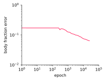
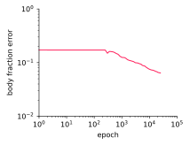

Idea to speed up the convergence of optimizers (L-BFGS, Adam, etc)
Use a hierarchy of grids, e.g. $N_1=65,\; N_2=33, \dots, N_L=3$
Decompose the solution $u$ on the fine grid $N_1$ as
\[
u = M_L(u_1, u_2, \dots, u_L) = u_1 + T_1 u_2 + T_1 T_2 u_3 + \dots + T_1\dots T_{L-1} u_L
\]
where $T_i$ is an interpolation operator from grid $N_{i+1}$ to $N_{i}$
Instead of minimizing the loss
\[
L(u) \rightarrow \min
\]
minimize
\[
L(M_L(u_1, u_2, \dots)) \rightarrow \min
\]
Multigrid Decomposition
Cavity 2D
L-BFGS
$\mathrm{Re}=100$
grid $65\times 65$
10x speedup with 5 levels
(65, 33, 17, 9, 5)
Multigrid Decomposition
Cavity 2D
L-BFGS
$\mathrm{Re}=400$
grid $65\times 65$
10x speedup with 5 levels
(65, 33, 17, 9, 5)
Multigrid Decomposition
Poisson 1D
Adam
grid $65$
Optical Flow
Optical flow problem: velocity from tracer field
Find a velocity field $\mathbf{u}(x,y,t)$ given that the tracer field $c(x,y,t)$
satisfies the advection equation
\[
\frac{\partial c}{\partial t} + \mathbf{u}\cdot\nabla{c} = 0
\]
and takes known initial $\left.c\right|_{t=0}=c_0$ and final $\left.c\right|_{t=1}=c_1$ values
The loss function is a discretization of
\[
\begin{align*}
L(c,\mathbf{u})&\textstyle=
\int\big(\frac{\partial c}{\partial t}+\mathbf{u}\cdot\nabla{c}\big)^2
{\rm d}x {\rm d}y {\rm d}t
+\int(\left.c\right|_{t=0}-c_0)^2 {\rm d}x {\rm d}y
+\int(\left.c\right|_{t=1}-c_1)^2 {\rm d}x {\rm d}y
\\
&\textstyle
+\int|k_\mathrm{xreg}\nabla^2 \mathbf{u}|^2{\rm d}x{\rm d}y {\rm d}t
+\int|k_\mathrm{treg}\frac{\partial}{\partial t} \mathbf{u}|^2{\rm d}x{\rm d}y {\rm d}t
\end{align*}
\]
Find a body fraction field $\chi(\mathbf{x})$ given that the velocity field $\mathbf{u}(\mathbf{x})$
satisfies the Navier-Stokes equations with penalization
\[
\begin{aligned}
\nabla \cdot \mathbf{u} &= 0 \\
(\mathbf{u}\cdot\nabla)\mathbf{u} &= -\nabla p + \frac{D}{\mathrm{Re}}\nabla^2\mathbf{u} - \lambda\chi\mathbf{u}
\end{aligned}
\]
and takes known values $\mathbf{u}(\mathbf{x}_i)=\mathbf{u}_i$
in the measurement points $\mathbf{x}_i$ for $i=1,\dots,N$
Transform $\chi = 1 / (1 + e^{-\hat\chi+5})$
Body Shape Inference
Penalization as mixture
\[
(1-\chi)\big((\mathbf{u}\cdot\nabla)\mathbf{u} +\nabla p - \nu\nabla^2\mathbf{u}\big) + \lambda\chi\mathbf{u} = 0
\]
with $\lambda=1$


 reference
reference

 
